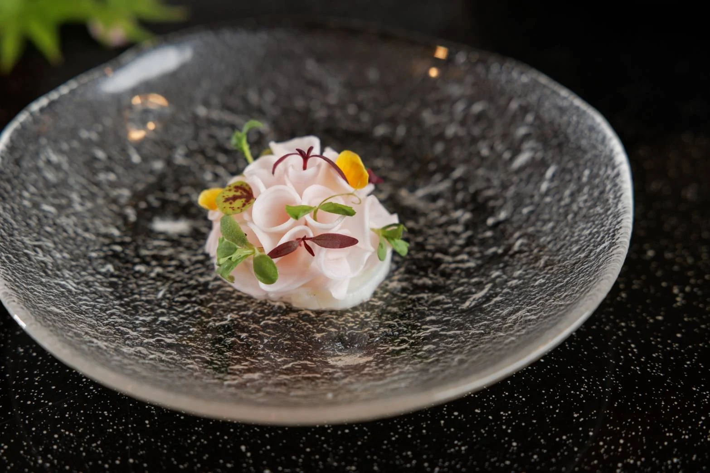
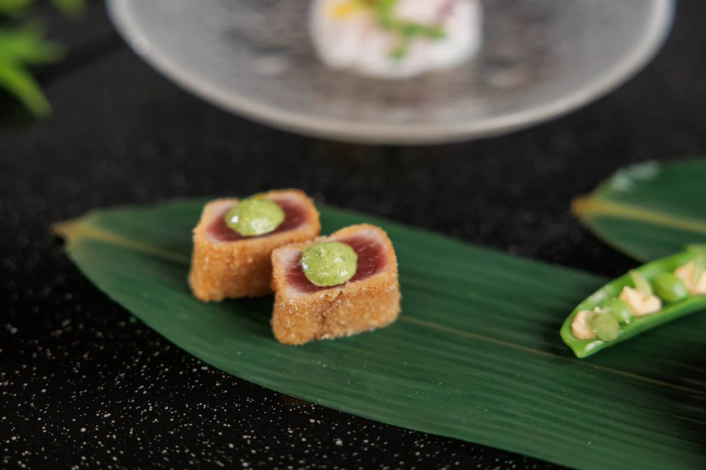
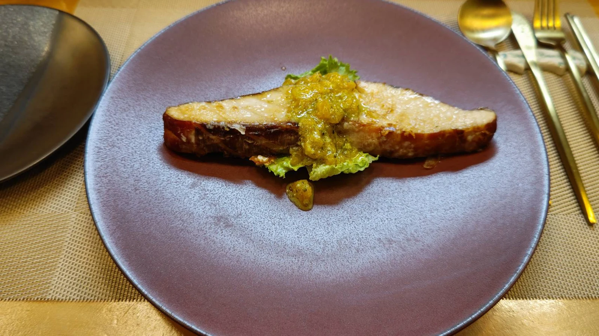
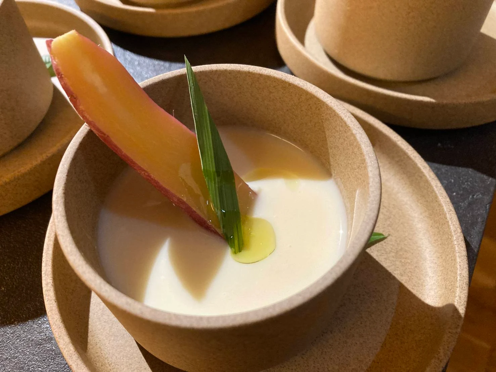

OTTO / RESTAURANTA thoughtful meal.
A thoughtful meal.
A real conversation.
Seeing the people who enjoy the food. Hearing their thoughts. Our restaurant keeps the distance between chef and guest small. We welcome you, by reservation, in Mobara, Chiba.




Photographs show examples of our cuisine. Please discuss the menu when booking.
- Address
- 553-5 Mobara, Mobara-shi
Chiba 297-0026, Japan
View on Google Maps - Opening hours
- Lunch 11:00–15:00 (Last order 14:30)
Dinner 18:00–22:00 (Last order 21:30) - Closed
- Irregular holidays, depending on reservations
- Reservations
- By phone, by the day before your visit
CONTACTSee you
See you
at the next table.
RESERVATIONS & ENQUIRIES
+81 90-6474-6012The restaurant is by reservation only. Please book by the day before your visit.
Visit & contact